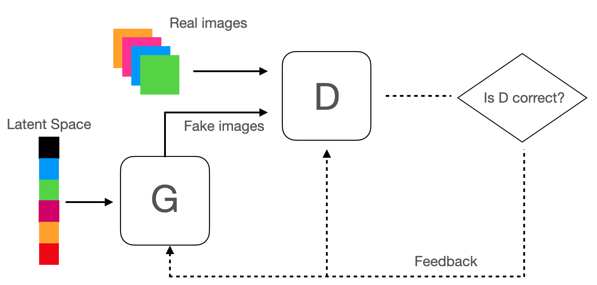
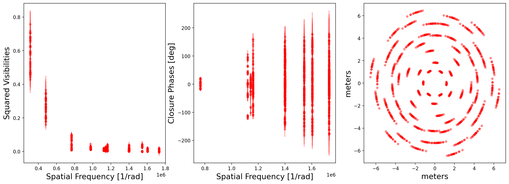
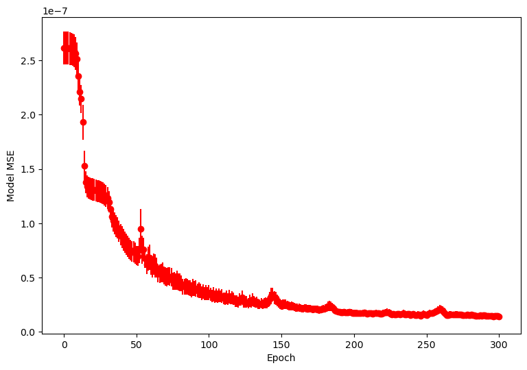
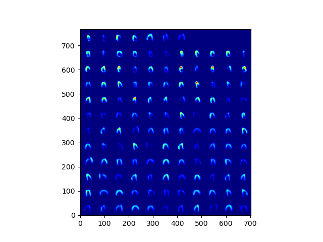
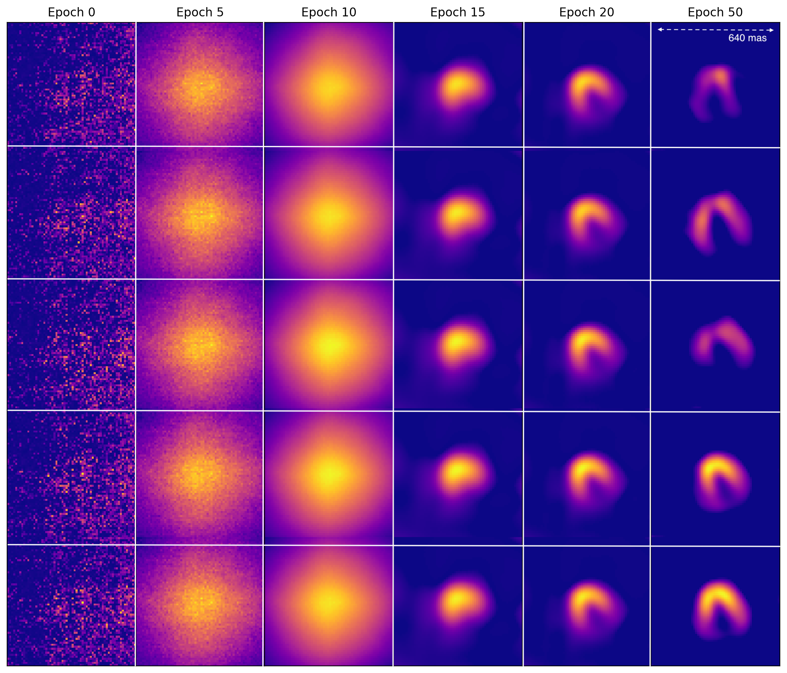
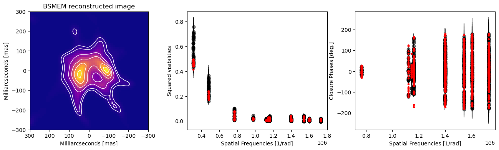
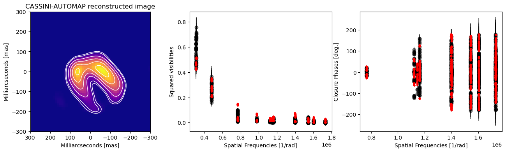

This repository includes software to reduce data obtained with Fizeau interferometry in the form of Sparse Aperture Masking.
Link to the GitHub repository with the code, click HERE
1. Introduction to the current state of infrared interferometric imaging
During the last decade, there has been a large effort to provide reliable software for image reconstruction to the community. However, the existing software packages face some problems:
• Most of the algorithms only work with monochromatic reconstructions. They cannot simultaneously recover images over different wavelengths. Therefore, they cannot make full use of differential phases and astrometry.
• Most of the algorithms rely on regularization functions in image space. These functions are necessary to ensure convergence and impose conditions such as smooth transitions between adjacent pixels, positivity, or sharp edges. Unfortunately, an unsuitable choice in the selection of regularization functions can result in in different outcomes for the same target even in the presence of a very good u-v coverage. Finally, ideally regularization functions need to vary across the pixel grid in case of complex target morphologies. This poses additional difficulties for the choice of regularizers and for the convergence of the algorithms, which are intimately connected.
• Most existing software packages use a Bayesian approach to fit the pixels’ brightness distribution. However, the fit is not always well constrained because of the traditional minimization algorithms used (gradient descent and Monte-Carlo), in particular if non-convex regularizers (such as the L0-norm) are used for the reconstruction. This can prevent the convergence of the algorithms.
• Each attempt at image reconstruction resembles an “artisanal” process, relying on the experience of each individual astronomer. Each reconstruction is tailored for a specific target and it is generally not possible to apply similar setups to a group of targets. This limits the potential of imaging for studies of large numbers of objects severely. A transition from artisanal to standard and reproducible imaging reconstruction is needed, securing the reliability and reproducibility of the results. This is particularly important for the upcoming instrumentation such as GRAVITY+ at the VLTI and NIRISS-SAM at the JWST.
2. Neural Networks for interferometric imaging
2.1. Introduction
Artificial neural networks (NN) are highly distributed systems that are inspired by the way neurons are inter- connected in biological nerve systems. The basic unit in a NN is called a neuron. It is interconnected with others to learn certain patterns or predict certain behavior. For this, it is necessary to train the NN over several iterations using a large number of models or measurements. This type of algorithm has demonstrated to learn very complex patterns that cannot be easily predicted with other, more traditional, methods. A type of NN that has demonstrated to be very efficient in learning morphological structures from images is a Convolutional Neural Network (CNN). This type of network is designed to work with grid-structured inputs that have strong local spatial correlations like the pixels of structured astronomical images. The key of the success of CNNs is their ability to semantically understand different structures by connecting layers in a localized way. Some examples of the applicability of these networks to recover, or even to generate new ”natural” images are the so-called Generative Adversarial Networks or Generative Variational Auto Encoders. Fig. 1 shows an example of a generative adversarial network, where two networks, the Generator (G; which is typically a CNN) and the Discriminator (D), play a minmax game so that G can learn how to produce new images based on the morphological properties of the ones used for training.
2.2. Adaptive hyper-parameters, a new framework for Neural Network training
The previous approaches rely on the process of fitting an object representation to noisy data by using regularized minimization methods (either by using the sparsity as regularizer, like in the CS approach; or using the output of D in the GAN reconstruction). However, a machine-learning step-forward is to estimate a direct mapping, F(m; θ), parametrized by θ, from the interferometric data, m, to the reconstructed image, t, without pre-defining strong hyperparameters. In the NN framework, to find θ this approach requires (i) to learn the set of weights of the neuron connections during the training process and (ii) to properly define the activation functions of each one of the neurons, when designing the network architecture.
One of the key aspects of pattern recognition from NNs is the role of the activation function. The activation function decides, whether a neuron should be activated or not with the purpose of introducing non-linearity into the output of a neuron. Determining the different activation functions in the architecture of the network is essential for its correct functioning. There are, at least, three types of activation functions: saturated, unsaturated and adaptive. Saturated activation functions are used for decision boundaries (e.g., Sigmoid). However, this type of activation functions could lead to vanishing gradient problems during the training process. Unsaturated activation functions solve the vanishing gradient problem but, it they fall into a negative region, is highly improbable that the neuron could be activated again (e.g., Rectified Linear Unit -ReLU-). This could be solved by adding a constant term that acts like threshold for the negative part of the function (e.g., Leaky ReLU). Nevertheless, including this new pre-defined constant is like adding an hyperparameter which could strongly affect the learning process of the NN. Adaptive activation functions solve these problems by using trainable coefficients. The use of adaptive activations functions has demonstrated to have interesting implications in making the learning process faster and more effective.

3. Example of NN imaging
3.1. Observations and Data
The data added to illustrate our NN reconstruction approach correspond to Sparse Aperture Masking (SAM) observations were taken with the NACO-VLT infrared camera. Particularly, we recorded SAM data on the extended infrared source GC IRS 1W in the Galactic Center (GC). This target is a previously identified stellar bow-shock source produced by the relative motion of the central star and the momentum balance shock between the stellar wind and the interstellar medium. The observations were performed using the L27 camera (0.027”/pixel) with the L’ broad-band filter (λ0 = 3.80 μm, ∆λ = 0.62 μm) combined with the BB 9holes NRM. We obtained 4 different data cubes from which the interferometric observable where extracted using CASSINI-SAMPip. Fig. 2 displays the calibrated squared visibilities, closure phases and u-v plane. The file MERGED_IRS1W.oifits contains all the SAM data used in this example and it is included in the Github repository.

3.2. Software architecture
Our NN algorithm is based on the AUTOMAP architecture. The AUTOMAP network has been used to reconstruct images from medical data obtained through Magnetic Resonance Imaging (MRI). This network has demonstrated to be quite efficient in mapping between sensor and image domains with the use of appropriate training data. The network presented here, called CASSINI-AUTOMAP, follows this approach and it maps directly the interferometric data to the reconstructed image by using a convolutional neural network. Figure 3 displays the model summary with the different layers used and the number of parameters trained on each one. Figure 4 shows a schematic representation of our NN. In the diagram, we can observe the two main sections of the network. The first one corresponds to three fully connected layers (FC1, FC2 and FC3) which map the input observables with the number of pixels in the output image. FC3 has a dimension equivalent to n2 × 1, where n is the number of pixels per side in the output image, in our case n=64. FC1 uses a simple sigmoid activation function. FC2 and FC3 use an adaptive hyperbolic tangent (Atanh) activation function with two trainable parameters. The second section employs three convolutional layers (C1, C2 and C3). C1 and C2 convolve 64 filters of 5 × 5 kernel size with stride 1 while, C3 uses a 7 × 7 kernel size. C1 and C2 employ a parametric rectified linear unit (PReLU) activation function and dropout with a probability of 0.1 before being connected between them. C3 and the output layer, C, are used to deconvolve the image into a 64 × 64 array.
Our network was deployed in Python using the Keras module in an Apple Mac BookPro computer under the PlaidML environment. The training of the network was performed using an external AMD Radeon RX 570 GPU with 4 GB of memory. CASSINI-AUTOMAP is accessible in the Github repository of this documentation. It is a single script that can be run with the following command:
>> python AUTOMAP_keras_4.py --mode train --epochs 300 --batch-size 128
As it can be observed AUTOMAP runs in-line on the Terminal with the following available commands:
1. --mode (train, generate, validate)
2. --batch_size (integer value)
3. --nice (True, False)
4. --epoch (integer value)
5. --oifilename (filename of the oifits data when recover interferometric images from data)
As part of the repository a .npz file is included with 2000 compressed radiative transfer models that can be used to train the network. These models are acompained with their corresponding interferometric observables. Both files are hardcoded in the NN code, they are asigned to the variables:
load_data = np.load('bs64_flux.npz') ## The RT models
load_oidata = np.load('xnew_OBTot.npz') ## The interferometric observables from the RT models
This setup will allow us to fully train the network over 300 epochs using the Adam optimizer. From our tests, we notice that the number of epochs used is, at least, a third of the ones required without using adaptive activation functions. This results in a significant reduction of the processing time required during training.
The cost function used for back-propagation of the gradient is the regression mean-squared error (MSE) loss. Figure 5 displays the MSE obtained from the different batches per epoch over the training process. The evolution of the MSE converges after 300 epochs. The biggest jump is observed around the first 20 epochs. This coincides with the epoch when the network learns the general shape of the bow shock.

Every 50 epochs the code saves the state of the weights in the network. In case the user needs to stop the net for debugging process. Every ten epochs the code also saves a .png file with a random series of batch images with the state of the trainning process; the code also saves a .fits file with those images for further inspection by the user. Fig. 6 displays an example of the images generated.

To illustrate better how the trainning process work, we plotted in Fig. 7 a sample of 5 different images obtained at different epochs, that clearly illustrate the evolution of the training process, at Epoch 0 there is only noise in the predicted images. However, as the network weights are evolving, central elongated structures appear and gradually the form of bow shocks emerge.

3.3 Reconstruction and benckmarking
Once the trainning process is finished (it is important that the user validates - this is done with the --mode validate keyword - the trainning of the net using independent models), AUTOMAP could be used to recover an image with real data. to do this, the user should include the following instruction in the Terminal:
>> python AUTOMAP_keras_4.py --mode generate --oifilename MERGED_IRS1W.oifits
where MERGED_IRS1W.oifits is the OIFITS file with the calibrated data that we are using for the reconstruction. For this example, we predict the morphology of the GC IRS 1W bow shock by randomly creating 100 samples from the interferometric data, assuming Gaussian distributions based on the mean and standard deviation of each observable. The mean image obtained with CASSINI-AUTOMAP was able to recover the interferometric observables with great accuracy. Indeed, the morphology of the bow-shock is clearly visible, even for pixel values below 5% of the peak value. We estimated a SNR ∼ 40 for pixel values of 5% of the emission peak.
In order to benchmark our neural network imaging algorithm, images from the SAM data were reconstructed using the regularized minimization algorithm BSMEM (21; 22). This code uses entropy as regularizer to encode the prior information of the source’s brightness distribution. This code uses the squared visibilities, closure phases and closure amplitudes to fit the model images with the data. Images were recovered using a pixel scale of 10 mas/px over a pixel grid of 64 × 64 px. Fig. 8 displays the best reconstructed image using BSMEM (the code converges to a χ2 = 1.1). Notice how the structure of the bow shock is recovered. The apex and the tails of the morphology are clearly observed. It can be seen that the peak of the brightness distribution is over the tails of the bow shock. The synthetic observables from the reconstructed images are displayed on top of the interferometric observables from the data. The best-fit image appears to recover quite well the trend observed in the interferometric data.
The reconstructed image with the NN (Fig. 9) also exhibits an asymmetric bow shock with the peak of the emission over the tails of the shock front. The estimated size of the bow shock and the position angle of the apex (PA ∼ 25º) are similar between the BSMEM image and the CASSINI-AUTOMAP one. However, we could clearly identify that the emission below 10% of the peak value in the BSMEM image is very asymmetric, while, in the NN image the emission follows the same structure of the tails. This effect is caused because of the models employed for training the network. However, this does not compromise the fit of the observables. Adding more structures (like point-like sources) to the models used for training could help us to discover additional asymmetries in the source structure. The interesting idea behind this is the possibility of linking these additional sources with well-recognized physical structures, for example dust clumps or stellar companions.

